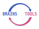

Voight-Kampff is improving the relationship between
brains and their
tools
In collaboration with neuroscientists, artists, and technologists, Voight-Kampff is developing a
new technology for displaying digital information
inspired by how our brains understand and interact with the world.
We are also developing
new training paradigms to explain
this technology to the brains that will use it.
Voight-Kampff Ltd. was founded in 2019 as a non-profit technology company. This was made possible through the
visionary support of the
Jean-François de Clermont-Tonnerre Foundation.
Voight-Kampff Ltd., 31 Oval Road, NW1 7EA, London, UK
phone: +44 (0)7506765342
email:
info@voight-kampff.tech